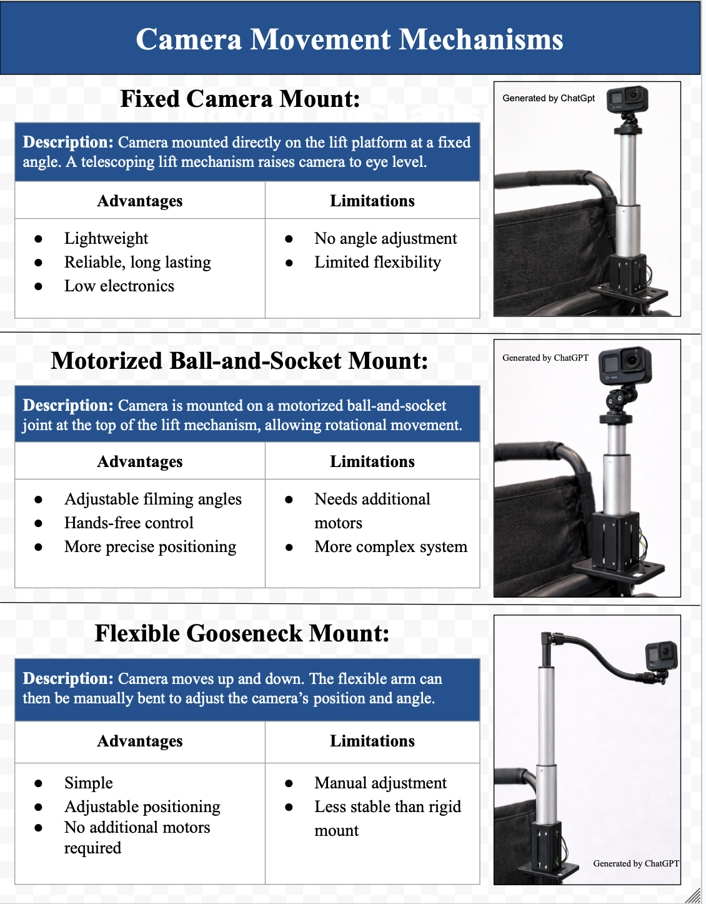
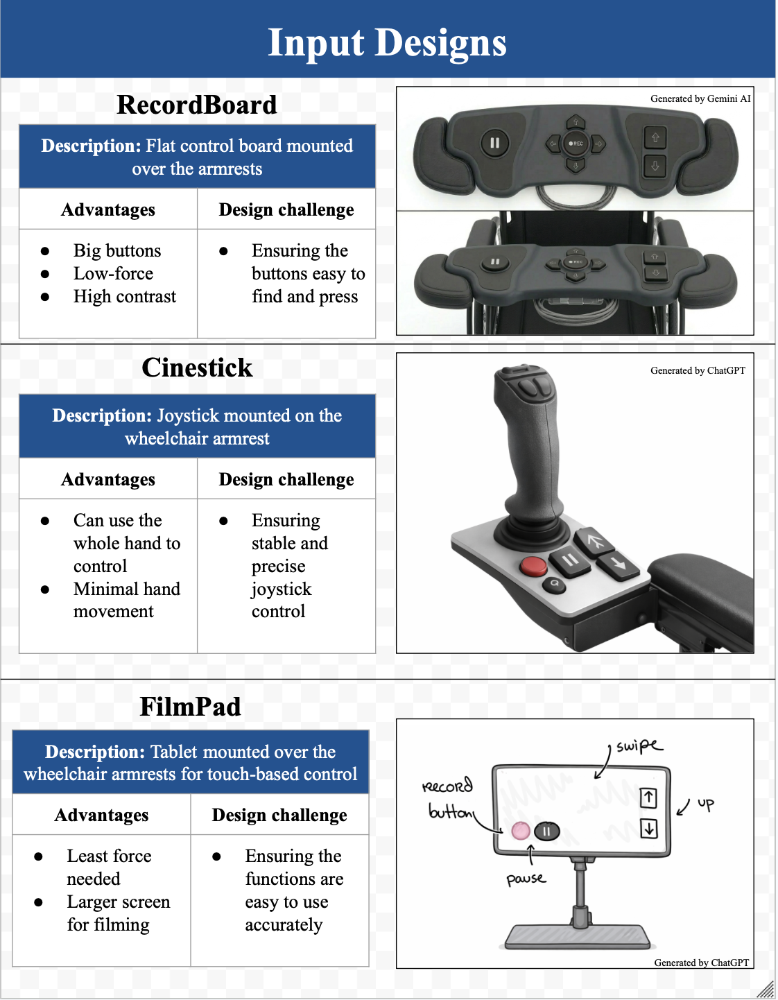
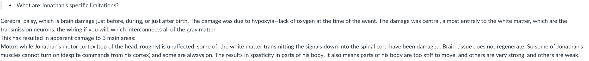
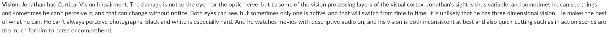
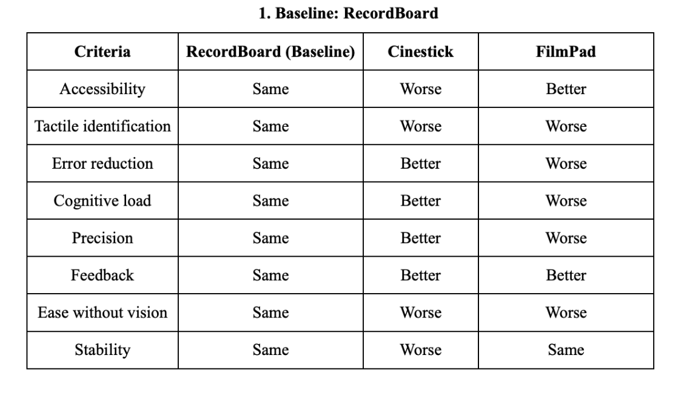
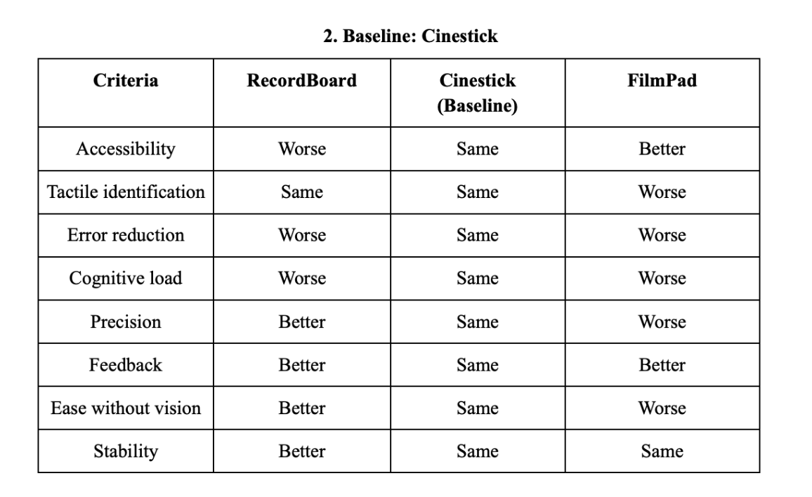

Diverge
Functional Decomposition
Functional decomposition is a diverging tool used to break
down a complex system into smaller functional components,
allowing designers to explore and develop solutions for each
part independently. Functional decomposition can be used to explore solutions to a given problem without
overly constraining the choices for implementing those solutions [7].

Fig. 12: Output system design concepts explored during functional decomposition.

Fig. 13: Input system design concepts explored during functional decomposition.
In this project, functional decomposition was used to better
understand and structure the accessible filming system by
separating it into key functional components, as seen in Fig. 12 and Fig. 13. The system was
divided into an input subsystem, Fig 13, and an output
camera-control subsystem, Fig. 12. The input subsystem focused on
enabling accessible interaction with the system, tailored to Jonathan’s motor and
visual limitations. In Fig. 13, we explored different input methods, such as button-based interfaces, touchscreens, and alternative input devices, to find the most accessible and user-friendly solution for Jonathan. The input system designs were chosen with thoughts that Jonathan
would be interacting with them really closely. The output
subsystem focused on camera positioning and enabling
controlled movement and eye-level filming. It focused on
filming features that we want to have and the artistic side. In Fig. 12, it can be seen
that we explored different camera mounting and movement mechanisms, that would allow for different degrees of freedom and stability.
This decomposition allowed us to explore multiple design
approaches for each function independently, rather than
attempting to solve the problem as a single, complex system.
It helped us diverge to 3 main concepts for input
systems and 3 main concepts for output systems and later
through converging, it was helpful to have both input and output systems, as we selected the best concept for each
section, integrating them into a final concept
together.
This process demonstrated that functional decomposition is
effective for managing complexity and generating targeted
solutions, particularly in user-centered design problems
where different system components must address distinct
constraints. As it was important to ensure that the input
system was accessible to Jonathan and the output system gave
the most artistic freedom. It also reinforced the
importance of designing subsystems that can work together
cohesively while still being optimized individually.
Frame
Stakeholder Analysis
Stakeholder analysis is a framing tool used to identify key
users and understand their needs, constraints, and values in
order to guide design decisions. It is the foundation of an entire project.
The process provides not only the quantitative information but the broad overview of the project as well [8].

Fig. 14: Notes from the community describing Jonathan's specific physical limitations [11].

Fig. 15: Notes from the community describing Jonathan's vision-related limitations [11]
Fig. 16: Community response, to a question asked, indicating Jonathan's preference for button-like controls [11]
In this project, stakeholder analysis was essential in
defining the problem, with Jonathan identified as the
primary stakeholder. To fully understand his needs, we
conducted research on his physical abilities and interaction
limitations, including observations of hand positioning,
grip control, and fine motor precision, as shown in Fig. 14. Using information provided
by the community, shown in Fig. 15 and Fig. 16, we were able to identify specific constraints such as limited dexterity and vision-related challenges. We also gathered insights into his preferences, such as a preference for button-like controls, as indicated in Fig. 17.
This allowed us to have a strong base of where to start our secondary research and concept development.
It also helped us move beyond assumptions and develop a more
accurate understanding of how Jonathan would interact with
the system.
These insights directly informed
our design requirements, including enabling one-handed
operation, increasing button size, and simplifying the
interface to reduce cognitive and physical load.
Additional stakeholders included counsellors and the Pegasus
organization, who emphasized safety, reliability, and ease
of setup. Before designing a solution, it was important to consider secondary stakeholders,
in this project they will be the ones setting up the filming system.
Balancing these needs required designing a system
that was both accessible for Jonathan and practical for
others involved in setup and supervision.
This process demonstrated that effective engineering design
begins with a deep understanding of stakeholders, and that
grounding decisions in real user evidence leads to more
meaningful and functional solutions. It showed that the interaction with the stakeholders removes bias that
the group could have had and allows for a more accurate understanding of the problem and the needs, which is essential for designing an effective solution.
Most importantly, stakeholder analysis here reinforced the importance of considering all stakeholders, including secondary ones, to ensure that the design is not only user-centered but also practical and feasible in its intended context.
Converge
Pugh Chart
A Pugh chart is a converging tool used to evaluate design
concepts against a set of defined criteria by comparing them
relative to a baseline using qualitative ratings such as
"Better," "Same," or "Worse." This allows for systematic
and structured decision-making across multiple competing
factors.

Fig. 17: Pugh chart with RecordBoard as the baseline for comparison

Fig. 18: Pugh chart with Cinestick as the baseline for comparison
In this project, a Pugh chart was used to evaluate three
input system concepts against key accessibility and
usability criteria derived from stakeholder research,
including tactile identification, error reduction,
cognitive load, and ease of use without vision. Each
concept was compared relative to a baseline using
qualitative ratings, and to reduce bias, multiple baselines
were considered throughout the analysis.
From analysing the Pugh Charts, Fig. 16 and Fig. 17, the comparison revealed that while the Cinestick performed
well in precision and continuous control, the custom control
board (RecordBoard) achieved the most balanced performance
across all criteria. It provided strong tactile
identification through large, distinguishable buttons,
reduced accidental inputs due to increased spacing, and
minimized cognitive load by offering simple, discrete
interactions. Additionally, it aligned closely with
stakeholder preferences for mechanical buttons and
supported reliable use without visual dependence.
Based on this evaluation, the custom control board was
selected as the optimal solution due to its consistency
across criteria and strong alignment with accessibility
requirements. This process showed that effective
design selection involves balancing multiple user-centered
factors rather than optimizing a single performance metric. It also removed any bias the team could have had towards choosing a certain more favored design.
It ensured that everything was backed up by evidence and justification rather than personal preference.